Github Branch
Branching
- Membuat Git Branch
-
Membuat snapshot tanpa mengganggu jalur utama (Master
Branch)
- Fitur Experimental
- 2 orang yang mengerjakan repo yang sama
Membuat Branch baru
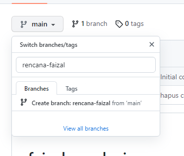
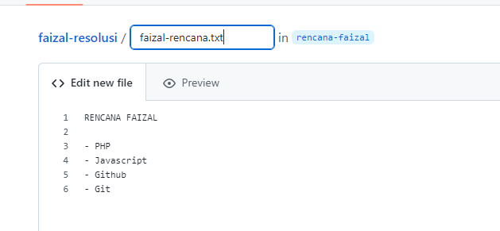
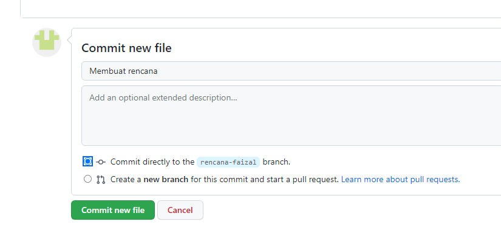
- jika kita ke branch rencana-faizal
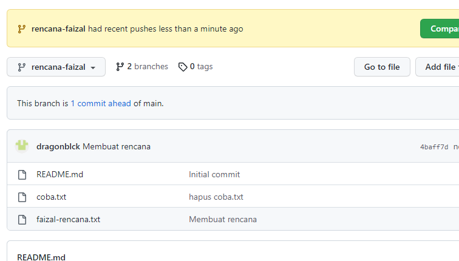
- jika kita ke branch master
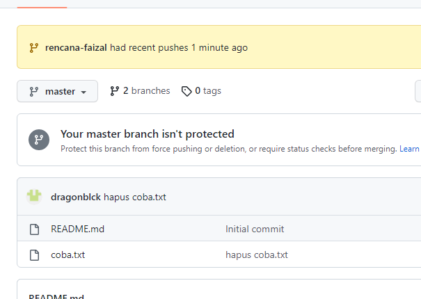
jika kita ubah
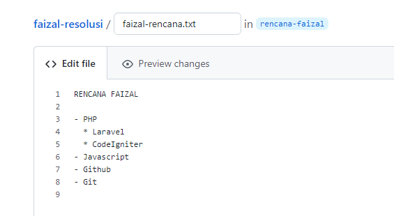
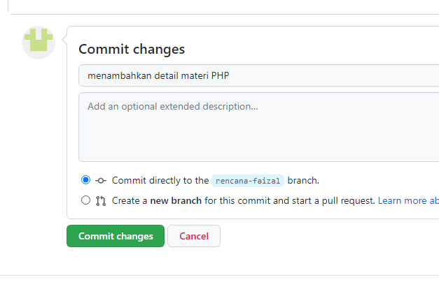
memasukkan rencana faizal ke jalur utama ke master branch
- Menggunakan merge
- click Compare & pull request
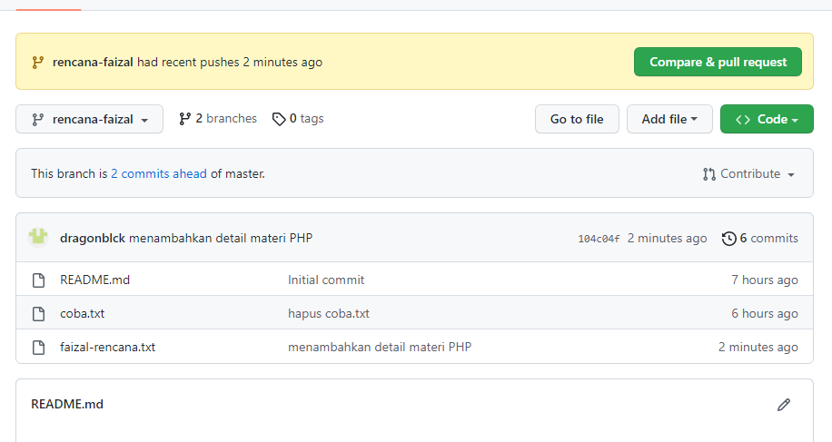
- kita akan masuk ke Open a pull request
-
kalo ada tulisan Able to merge artinya tidak ada
masalah
-
kenapa disebut pull request : karena secara default
meskipun melakukan kita sendiri di repo / akun, tapi
tetap harus melakukan pull request
-
kalo kita punya branch, branch harus minta izin ke repo
supaya perubahan di branch nya bisa masuk
-
kenapa namanya pull request : karena branch ini
merequest / meminta agar si pemilik masternya menarik
perubahan dia
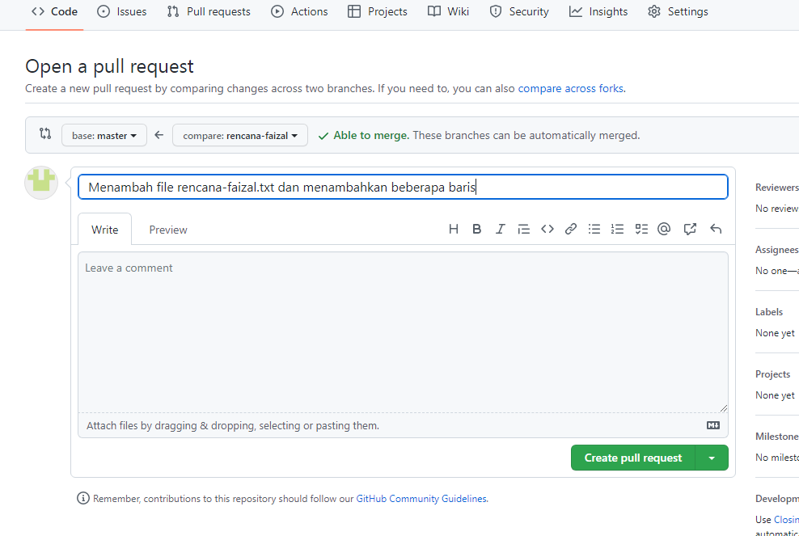
- click create pull request
- nanti akan diarahkan ke tab Pull request
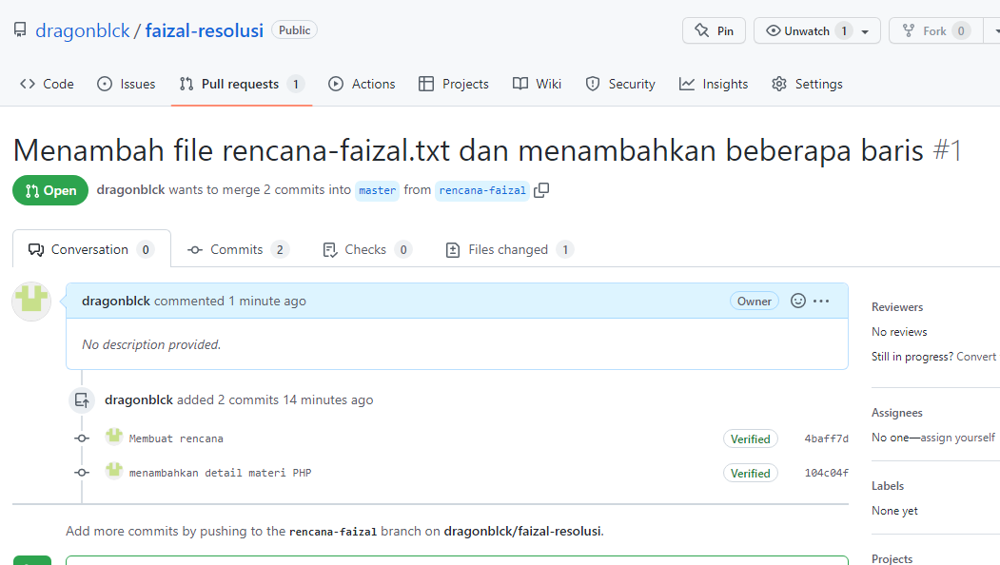
-
jika sudah tidak ada masalah silahkan click
Merge pull request
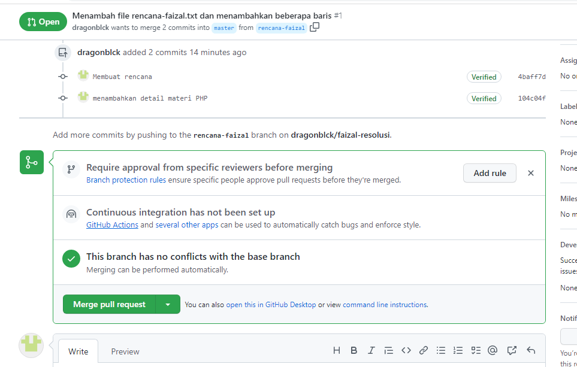
-
jika kita ingin membalas ketikkan seperti itu, jika
sudah click Confirm merge
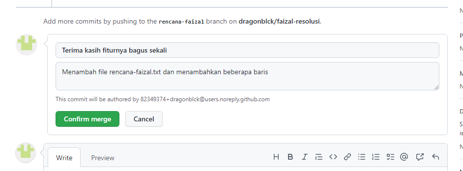
- jika seperti ini artinya berhasil
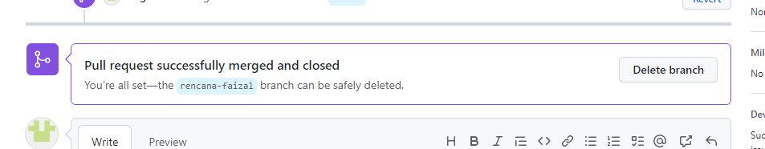
-
jadi branch master dan rencana-konten sama dan di Pull
request tidak ada lagi
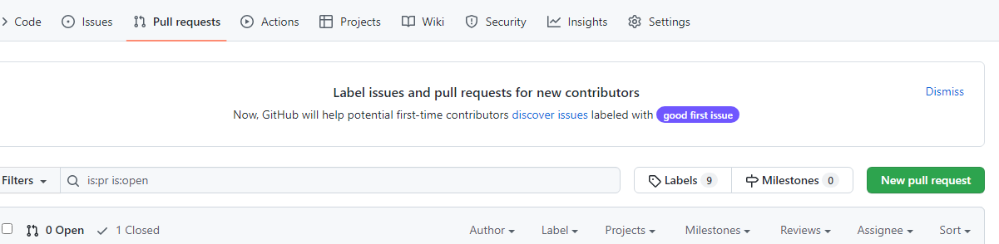
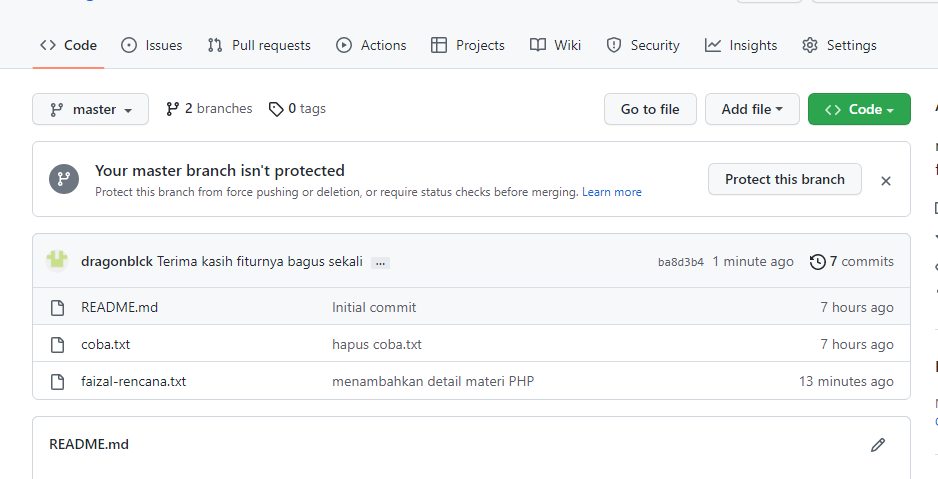
- kalo kita lihat di Insights » Network
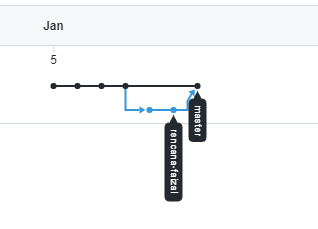
Untuk menghapus branch
- click branches
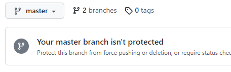
- click icon tempat sambah
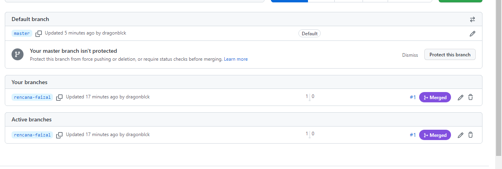
- kita tambahkan fi file rencana-faizal.txt
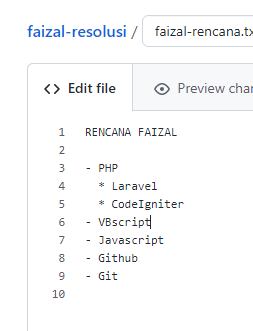
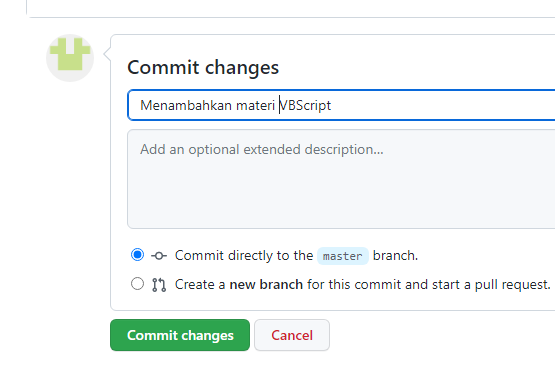
- kita tambahkan 2 branch
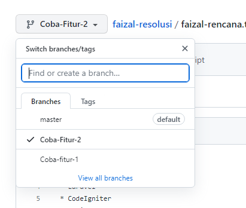
- di branch Coba-fitur-1
- kita edit faizal-rencana.txt
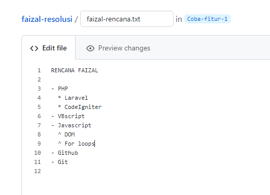
- di branch Coba-fitur-2
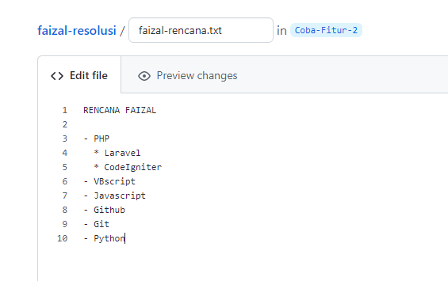
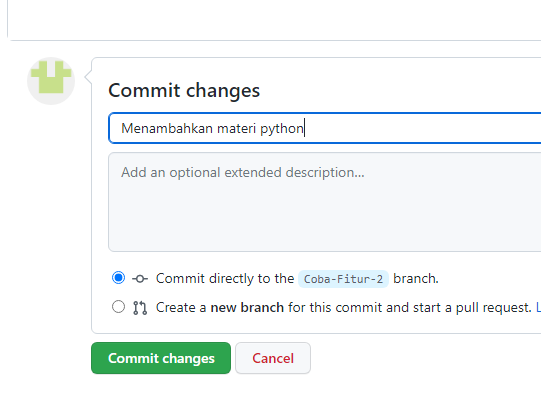
- di branch Coba-fitur-2
- kita tambahkan commit lagi
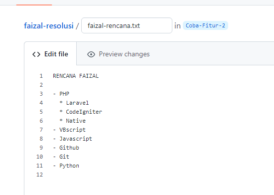
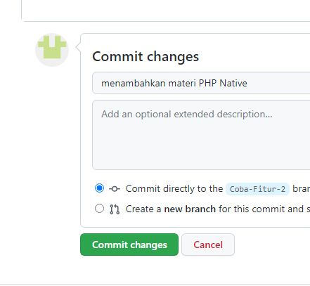
- kia cek di Insights » Network
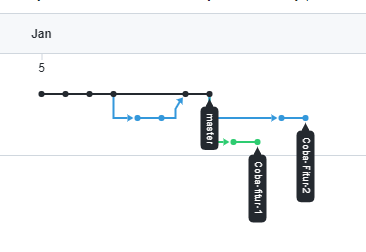
Kita merge 1 per 1
- kita merge Coba-fitu-1
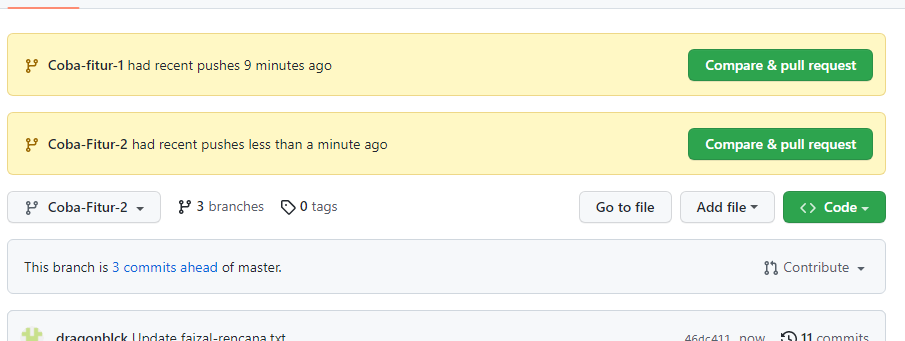
- aman
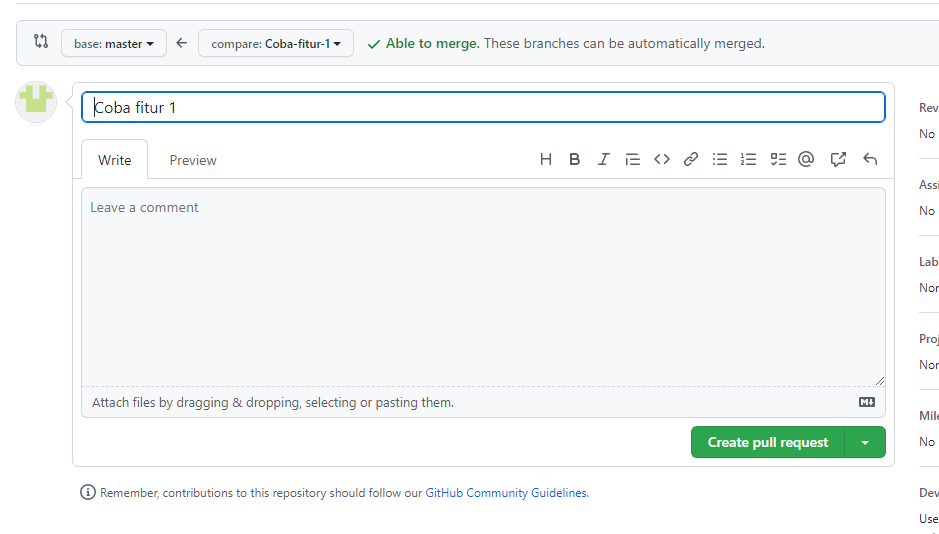
- kita merge Coba-fitur-2
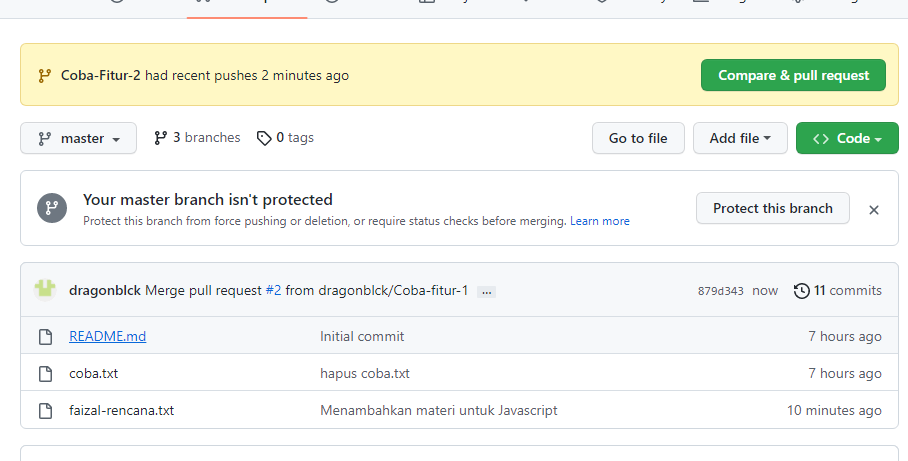
- ada masalah
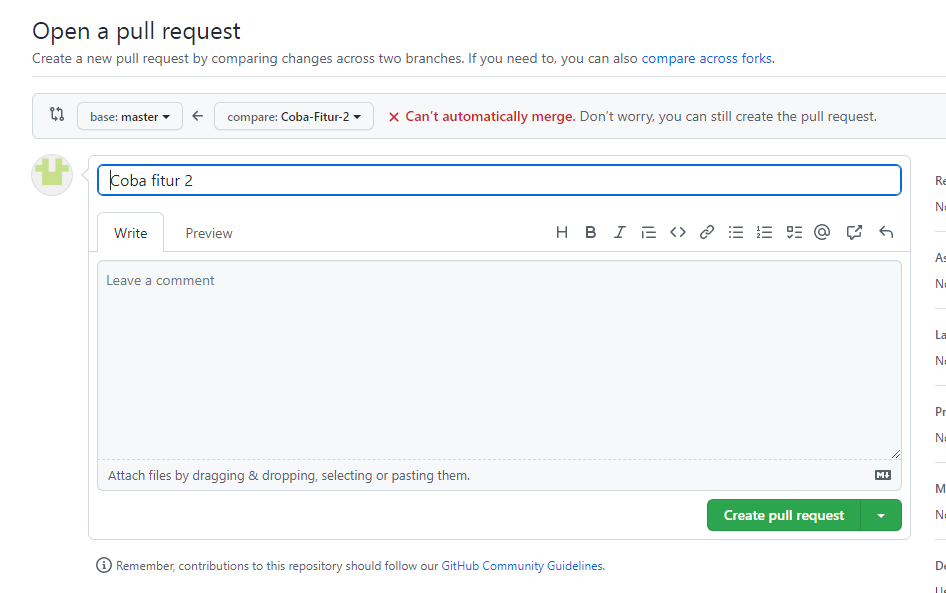
- kita Create pull request
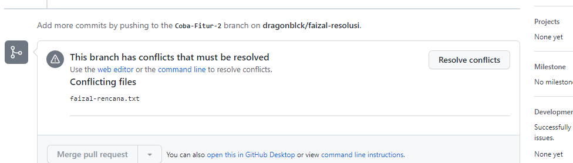
-
kita Resolve Conflicts untuk memecahkan masalah
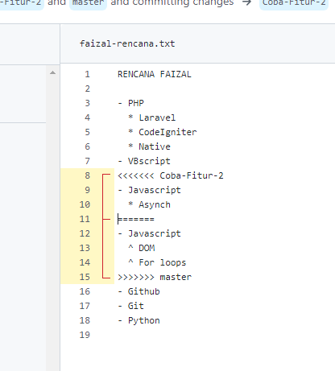
- kita atur sesuai keinginan
-
jika sudah click Marck Resolved »
Commit merge
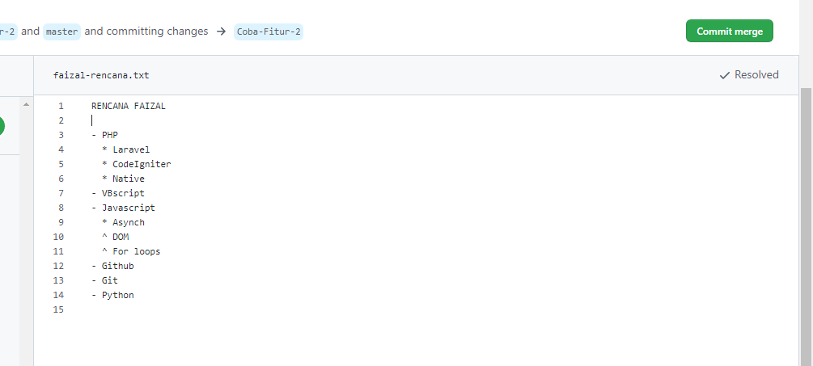
- kita kita masuk ke Inssights » Network
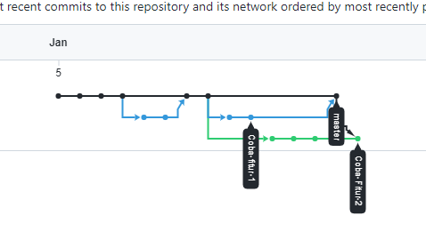
Recap
- Branch
- Jalur 'development' bebas dair sebuah commit
- Checkout
- berpindah ke branch / commit yang lain
- Pull Request
-
meminta pemilik repo untuk 'mengambil' perubahan
yang telah dilakukan
- Merge
- Merge Conflict
-
baris yang sama diubah oleh 2 branch yang berbeda